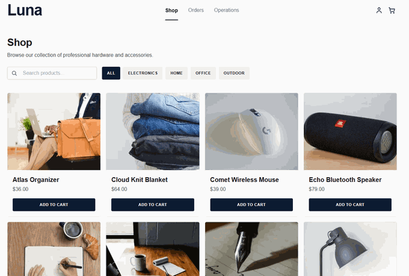

Featured Architecture
Open Source / Distributed .NET 8
Luna — Distributed Commerce & Logistics System
Six microservices + Next.js storefront each with independent SQL Server database communicating over EventBridge & SQS. Features Luna Ops console for warehouse staff driving fulfillment and shipment lifecycle, with end-to-end distributed tracing via OpenTelemetry & SigNoz.
.NET 8CQRSAWS SQSEventBridgeSigNozOpenTelemetryNext.jsDocker